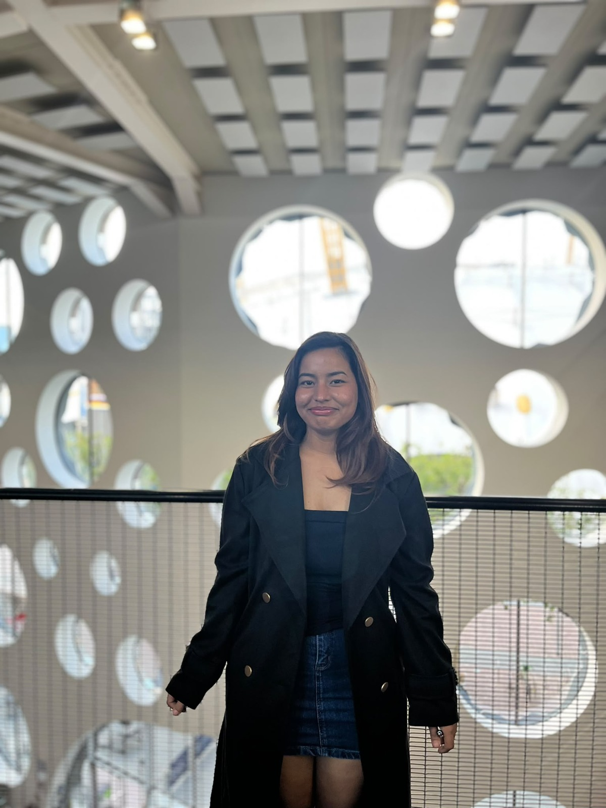
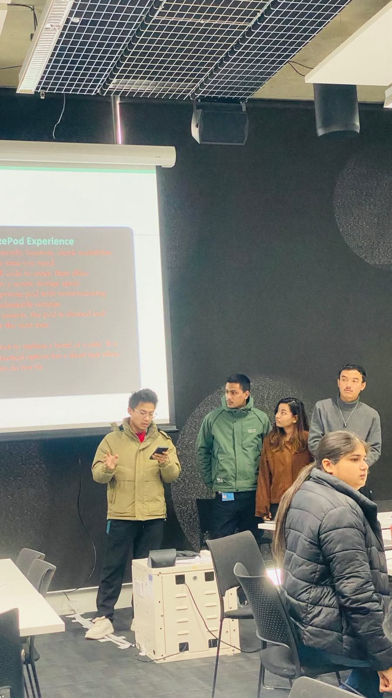
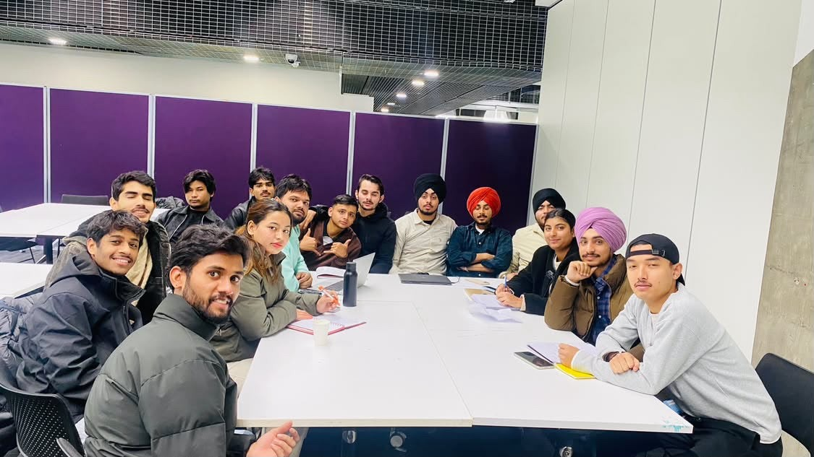
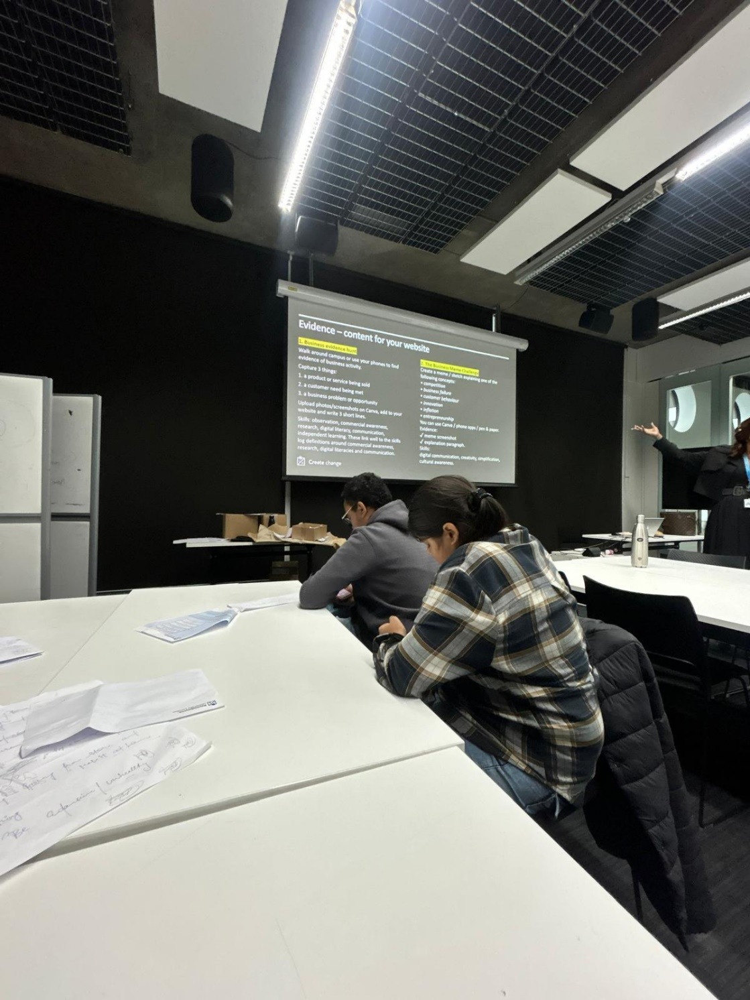
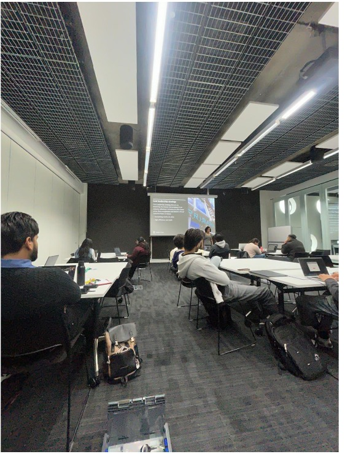
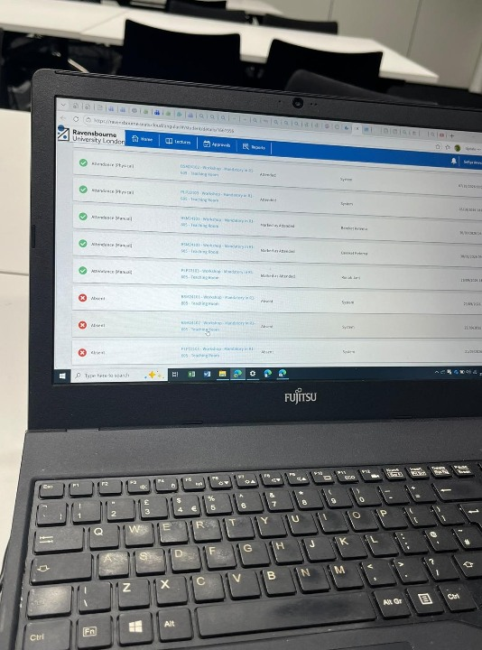
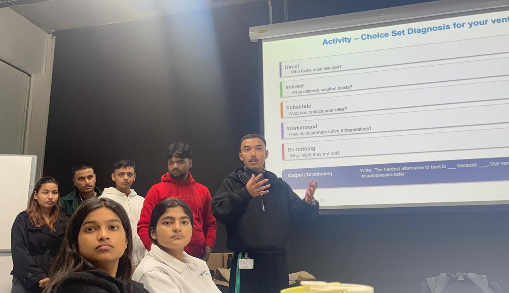
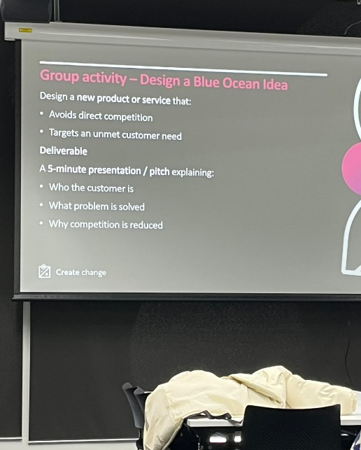

Attendance & punctuality
My attendance record helps me review participation. Arriving on time and attending consistently remain important development goals.
Attendance evidence →Student portfolio · 2026
My learning journey and employability skills development at Ravensbourne University London.
This portfolio brings together evidence from The Business Landscape module, including group presentations, debates, classroom learning and business strategy activities. It connects my academic experiences with skills relevant to the workplace.

01 / Professional development
The module's mandatory skills and how my evidence relates to them.
My attendance record helps me review participation. Arriving on time and attending consistently remain important development goals.
Attendance evidence →Group presentations and debates provide opportunities to share ideas, listen to classmates and work towards shared tasks.
Group presentation →Presentations and debates relate to speaking and listening skills. Classroom tasks provide opportunities to practise organising written ideas.
Group debate →Classroom activities provide a starting point for reviewing business concepts independently and developing my understanding beyond lessons.
Classroom learning →My next step is to seek feedback and use available academic support for research, referencing and written work.
Development goalStrategy exercises relate to rational thinking and problem-solving. Reflecting on feedback and setbacks can help develop self-reflectiveness and resilience.
Business strategy activities →02 / Academic activities
Photographs from my evidence document, connected to learning and employability skills. Select a photograph to see it in full.

Communication · Collaboration
A classroom presentation with classmates, illustrating the opportunity to develop public speaking, teamwork and contribution.

Listening · Critical thinking
A group discussion setting for exchanging viewpoints, considering different perspectives and practising reasoned communication.

Learning · Engagement
Classroom materials and activities provide a foundation for reviewing topics, organising notes and developing independent study habits.

Attendance · Academic engagement
A photograph of a classroom session that documents the learning environment and the importance of regular academic engagement.

Attendance · Self-reflection
The university portal shows a record of attendance, including different attendance statuses. It provides a basis for reviewing consistency and areas for improvement.

Problem-solving · Collaboration
A classroom exercise about considering the alternatives available to customers. It connects business analysis with rational thinking and group discussion.

Creativity · Strategic thinking
The task involved designing a product or service that avoids direct competition and meets an unmet customer need, with a five-minute pitch explaining the customer, problem and reduced competition.
03 / Looking ahead
The activities in this portfolio illustrate how classroom learning connects to professional development. Presentations and debates relate to communication and collaboration, while strategy exercises provide opportunities to apply business concepts and think creatively.
My aim is to build on these experiences through more consistent participation, independent study and constructive feedback. These skills are relevant to future academic projects and professional environments.